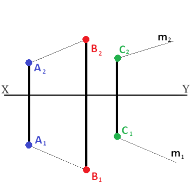
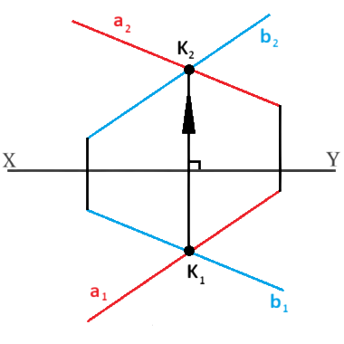
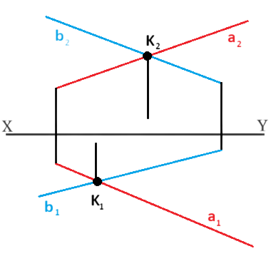
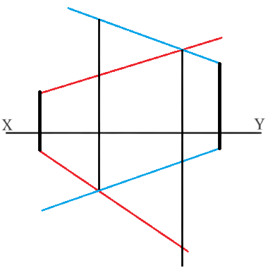
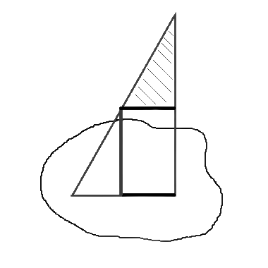

★ წრფეებს ერთმანეთის მიმართ, შესაძლებელია, ჰქონდეთ ურთიერთპარალელური, ურთიერთმკვეთი ან აცდენილი მდებარეობა.
თუ ორი წრფე პარალელურია სივცრეში, მაშინ ნახაზზე პარალელურია მათი ერთსახელა გეგმილები.

თუ ორი წრფე იკვეთება სივრცეში, მაშინ ნახაზზე იკვეთება მათი ერთსახელა გეგმილებიც, ხოლო გეგმილების გადაკვეთის წერტილები წარმოადგენ სივრცეში წრფეების გადაკვეთის წერტილის გეგმილებს, ანუ მდებარეობენ ღერძის საერთო მართობზე.

თუ ორი წრფე აცდენილია სივცრეში, მაშინ შესაძლებელია მათი ერთსახელა გეგმილები იკვეთებოდნენ, მაგრამ გადაკვეთის წერტილები ღერძის საერთო მართობზე არ მოთავსდება.

თარაზულ გეგმილზე ხილვადობას განსაზღვრისთვის თარაზული გეგმილების გადაკვეთის წერტილიდან გავატაროთ x-ღერძის მართობი ორივე წრფის შვეული გეგმილის გადაკვეთამდე. შვეულ გეგმილზე რომელი წერტილიც შორსაა x-ღერძიდან, ანუ რომლის ƶ-კოორდინატიცაა მეტი, თარაზულ გეგმილზე ხილვადი ის წერტილია (შვეულ გეგმილზე ხილვადობა ანალოგიურად განიხილება).

წრფის მონაკვეთის ნამდვილი სიდიდის განსაზღვრა და დახრის კუთხეები გეგმით სიბრტეებთან
★ წრფის მონაკვეთის ნამდვილი სიდიდის საპოვნელად რომელიმე გეგმილზე ავაგოთ მართკუთხა სამკუთხედი. მეორე კათეტი იქნება მოპირდაპირე გვერდის გეგმილის x-ღერძიდან დაშორებათა ალგებრული სხვაობა. ჰიპოთენუზა წარმოადგენს წრფის მონაკვეთის ნამდვილ სიდიდეს.

სიბრტყის ასახვა ბრტყელ ნახაზზე
ზოგადი და კერძო მდებარეობა სიბრტყეებზე
★ სივრცეში სიბრტყე განისაზღვრება ერთ წრფეზე არამდებარე სამი წერტილით. ნახაზზე თვალსაჩინოებისთვის, სიბრტყეს ასახავენ ამ სამ წერტილზე გამავალი ბრტყელი ნაკვთის გეგმილებით ან შესაბამის წერტილებზე გამავალი პარალელური თუ მართობული წრფეებით.
★ სიბრტყეს, რომელიც დახრილია სამივე გეგმითი სიბრტყის მიმართ, ეწოდება ზოგადი მდებარეობის სიბრტყე. მაშასადამე, ბოლო სამ ნახაზზე გამოსახული სიბრტყეები არიან ზოგადი მდებარეობის.
კერძო მდებარეობის სიბრტყეები
★ სიბრტყეს, რომელიც მართობულია გეგმითი სიბრტყის მიმართ, ეწოდება მაგეგმილებელი სიბრტყე.
თარაზული გეგემითი სიბრტყის მართობულ სიბრტყეს ეწოდება თარაზულად მაგეგმილებელი სიბრტყე და მისი ყველა წერტილი თარაზულ გეგმილზე მოთავსდება ერთ წრფეზე.
შვეული გეგმითი სიბრტყის მართობულ სიბრტყეს ჰქვია შვეულ-მაგეგემილებელი სიბრტყე და მისი შვეული გემილი წრფეა.
პროფილურ გეგმითი სიბრტყის მართობულ სიბრტყეს ეწოდება პროფილურად მაგეგემილებელი სიბრტყე. მისი პროფილური გეგმილი არის წრფე.